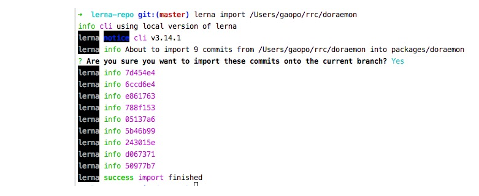

lerna（大型前端项目模块管理工具）
1、概述
Lerna是一个工具，它优化了使用git和npm管理多包存储库的工作流；vue、babel、react等都在用。
2、工作模式
lerna有2种工作模式
vue,babel都是用这种，在publish的时候,会在lerna.json文件里面"version": "0.1.5",,依据这个号，进行增加，只选择一次，其他有改动的包自动更新版本号，会统一的使用这一个发布的版本号。
lerna init --independent`初始化项目。
`lerna.json`文件里面`"version": "independent",每次publish时，您都将得到一个提示符，提示每个已更改的包，以指定是补丁、次要更改、主要更改还是自定义更改。
3、快速开始
$ npm install lerna -g
$ mkdir lerna-gp && cd $_
$ npm lerna init # 用的默认的固定模式，vue babel等都是这个
# Add packages
$ cd packages
$ mkdir daybyday gpnode gpwebpack
...
#分别进入三个目录初始化成包
$ cd daybyday
$ npm init -y
$ cd ../gpnode
$ npm init -y
$ cd ../gpwebpack
$ npm init -y4 、 项目结构
➜ lerna-gp git:(master) ✗ tree
.
├── lerna.json
├── package.json
└── packages
├── daybyday
│ └── package.json
├── gpnode
│ └── package.json
└── gpwebpack
└── package.json
4 directories, 5 files5、 Set up
Set up git + npm
✗ git remote add origin git@gitlab.yourSite.com:gaopo/lerna-gp.git
#查看是否登录
✗ npm whoami
gp0320
#没有则登录
npm login
# 输入username password
Logged in as gp0320 on https://registry.npmjs.org/. # succeedSet up yarn的workspaces模式
默认是npm, 而且每个子package都有自己的
node_modules，通过这样设置后，只有顶层有一个node_modules
- 修改顶层
package.json and lerna.json
# package.json 文件加入
"private": true,
"workspaces": [
"packages/*"
],
# lerna.json 文件加入
"useWorkspaces": true,
"npmClient": "yarn",
6 、Lerna Script
lerna create [loc]
创建一个包，name包名，loc 位置可选
Examples
# 根目录的package.json
"workspaces": [
"packages/*",
"packages/@gp0320/*"
],
# 创建一个包gpnote默认放在 workspaces[0]所指位置
lerna create gpnote
# 创建一个包gpnote指定放在 packages/@gp0320文件夹下，注意必须在workspaces先写入packages/@gp0320，看上面
lerna create gpnote packages/@gp0320lerna add [@version] [–dev] [–exact]
增加本地或者远程
package做为当前项目packages里面的依赖
--devdevDependencies 替代dependencies--exact安装准确版本，就是安装的包版本前面不带^, Eg:"^2.20.0" ➜ "2.20.0"
Examples
# Adds the module-1 package to the packages in the 'prefix-' prefixed folders
lerna add module-1 packages/prefix-*
# Install module-1 to module-2
lerna add module-1 --scope=module-2
# Install module-1 to module-2 in devDependencies
lerna add module-1 --scope=module-2 --dev
# Install module-1 in all modules except module-1
lerna add module-1
# Install babel-core in all modules
lerna add babel-corelerna bootstrap
默认是npm i,因为我们指定过yarn，so,run yarn install,会把所有包的依赖安装到根node_modules.
lerna list
列出所有的包，如果与你文夹里面的不符，进入那个包运行yarn init -y解决
➜ lerna-gp git:(master) ✗ lerna list
lerna notice cli v3.14.1
daybyday
gpnode
gpnote
gpwebpack
lerna success found 4 packageslerna import
导入本地已经存在的包
lerna run
lerna run < script > -- [..args] # 运行所有包里面的有这个script的命令
$ lerna run --scope my-component testlerna exec
运行任意命令在每个包
$ lerna exec -- < command > [..args] # runs the command in all packages
$ lerna exec -- rm -rf ./node_modules
$ lerna exec -- protractor conf.js
lerna exec --scope my-component -- ls -lalerna link
项目包建立软链，类似npm link
lerna clean
删除所有包的node_modules目录

lerna changed
列出下次发版lerna publish 要更新的包。
原理：
需要先git add,git commit 提交。
然后内部会运行git diff --name-only v版本号，搜集改动的包，就是下次要发布的。并不是网上人说的所有包都是同一个版全发布。
➜ lerna-repo git:(master) ✗ lerna changed
info cli using local version of lerna
lerna notice cli v3.14.1
lerna info Looking for changed packages since v0.1.4
daybyday #只改过这一个 那下次publish将只上传这一个
lerna success found 1 package ready to publishlerna publish
会打tag，上传git,上传npm。
如果你的包名是带scope的例如："name": "@gp0320/gpwebpack",
那需要在packages.json添加
"publishConfig": {
"access": "public"
},
lerna publish
lerna info current version 0.1.4
#这句意思是查找从v0.1.4到现在改动过的包
lerna info Looking for changed packages since v0.1.4
? Select a new version (currently 0.1.4) Patch (0.1.5)
Changes:
- daybyday: 0.1.3 => 0.1.5 #只改动过一个
...
Successfully published:
- daybyday@0.1.5
lerna success published 1 package

{kind=link}
{kind=link}
{kind=link}